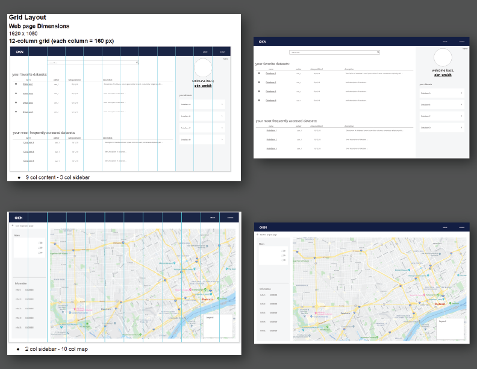
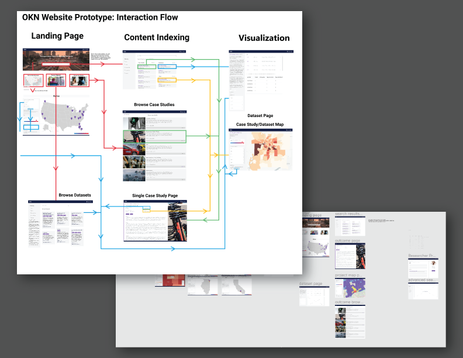
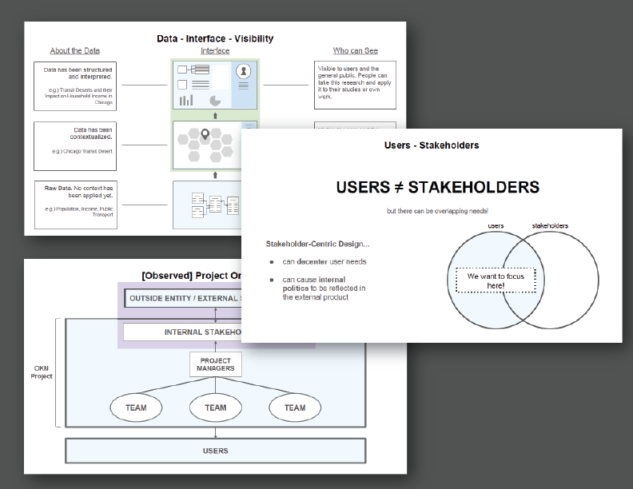
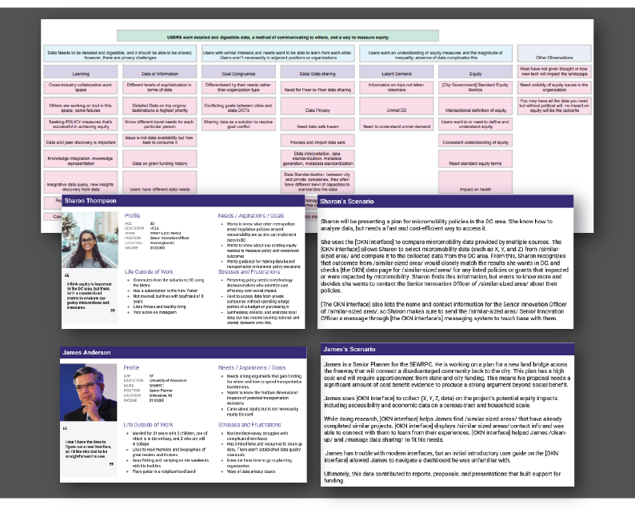

About TEOKN:
The Transportation Equity Open Knowledge network offers transportation policymakers and stakeholders the tools to interpret and disseminate data about transportation. As an open knowledge network, TEOKN promises its users data accessibility and community connectivity in ways that promote the examination of disparity and equity within the community.
What I did:
Interface Design (Adobe XD, Figma)
-
Designed the dashboard interface using Adobe XD and Figma and created a style and design guide.
- When working alone on the design, I used Adobe XD to iterate upon a first draft of the website due to its easy-to-use interface and easy importability into a more collaborative space such as Figma. Once my team expanded, we worked in Figma to create a higher-fidelity prototype to more fully convey the scope of the dashboard to stakeholders. A classic and simple color scheme was used because of the tool's need to be accessible.

-
Collaborated with team members on Figma to create a mid-fidelity dashboard design.
- With my team, we used Figma to collaborate and refine my base design. We focused on interaction flow, added placeholder images, and fleshed out each view to better visualize how content would look on each page.

User Needs Assessment
-
Created documentation advocating for acommon language and highlighting observed user-stakeholder structures.
- Due to everyone in the team having varying understandings of different terminology (such as "user" or "interface"), I created several documents to help everyone understand what the UI/UX definitions of some of the most frequently-used terms were. By advocating for a controlled, "common" language, it became easier for team leaders to set appropriate expectations about design and interface.
- After creating a common language, it became apparent that it was not clear what users' needs were, and if the product being designed addressed those needs.

-
Hosted and led an affinity workshop with project staff and created personas and scenarios based on findings.
- While trying to scope the breadth and depth of what the TEOKN would offer to its users, I led an affinity wall workshop with my project cohort to better understand what different people expected from the dashboard. As a result, we were able to set aside some of the features that were determined to be of lesser priority as well as further understand what purpose the TEOKN would serve.
- The affinity workshop also taught non-UI/UX-background members of the team learn more about assessing user needs. Sticky-noting also allowed the team to better verbalize their ideas about TEOKN.
- The main user needs and painpoints discovered from the affinity wall workshop were used to create several personas and scenarios.

-
Synthesized user needs and project goals to create a promotional video.
- With a better understanding of TEOKN's purpose and the needs of potential users, my team created a promotional video that was used to present the project at conventions and to grants that were interested in transportation initiatives. The project was presented at the 2020 NSF Expo.